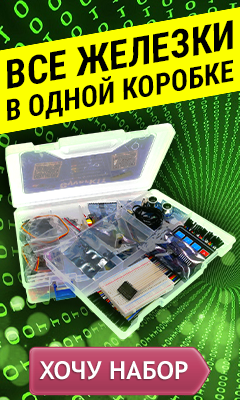
На данной странице находится максимально подробный гайд по началу работы с Arduino, в котором можно найти ответы на все вопросы касательно установки, подключения и загрузки прошивки, а также по работе с моими проектами. Внимательно изучите гайд, прежде чем писать мне на почту или в нашу группу ВК, если у вас что-то не получается, тут есть ответы на все вопросы. Также прилагаю список уроков на этом сайте, где можно найти ещё больше базовой информации:
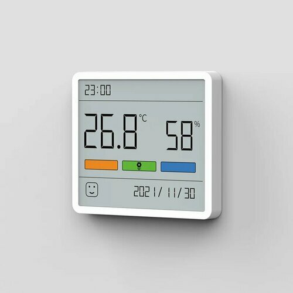
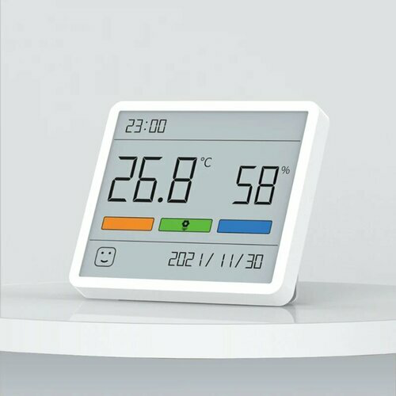
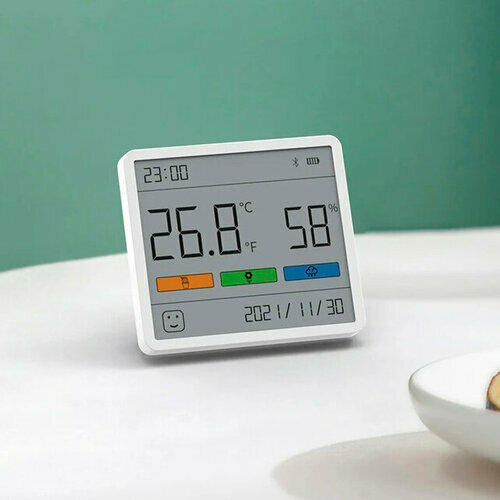
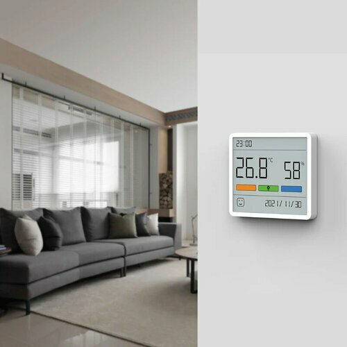
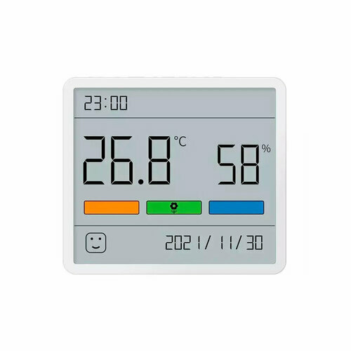
РЕКЛАМА
market.yandex.ru
Датчик температуры и влажности с часами Xiaomi Duka...
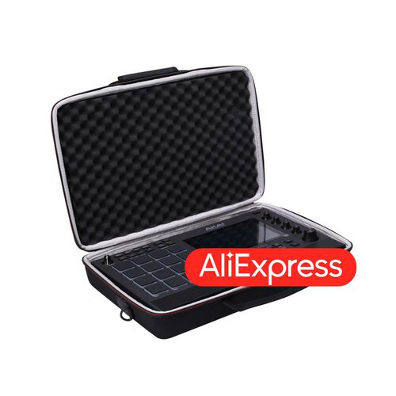
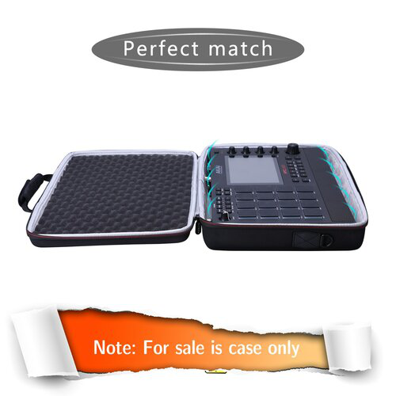
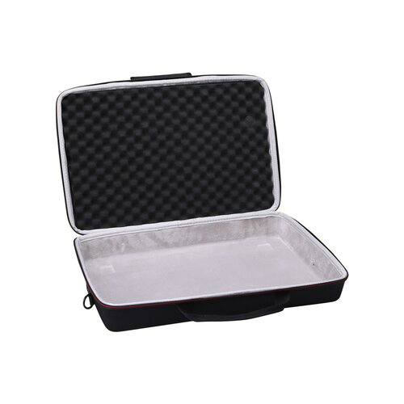
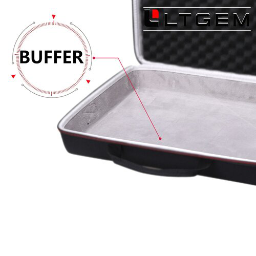
РЕКЛАМА
aliexpress.ru
Жесткий чехол LTGEM EVA для AKAI Professional MPC...
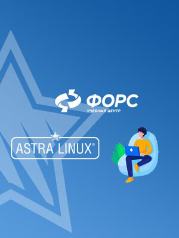
РЕКЛАМА
edu.fors.ru
Стань профессионалом ASTRA LINUX! Обучаем очно и онлайн!
Arduino IDE – программа для написания и загрузки прошивки в плату, скачать можно с официального сайта вот здесь. Внимание! Перевод языка страницы в браузере ломает кнопки! На данный момент называется Legacy IDE (1.8.X), так как вышла новая IDE v2. Новичкам рекомендуется начать с версии 1.8.X.
Перед загрузкой вам предложат пожертвовать на развитие проекта, можно отказаться и нажать JUST DOWNLOAD (только скачать). Либо открываем прямую ссылку на загрузку версии 1.8.19 и сразу качаем файл.
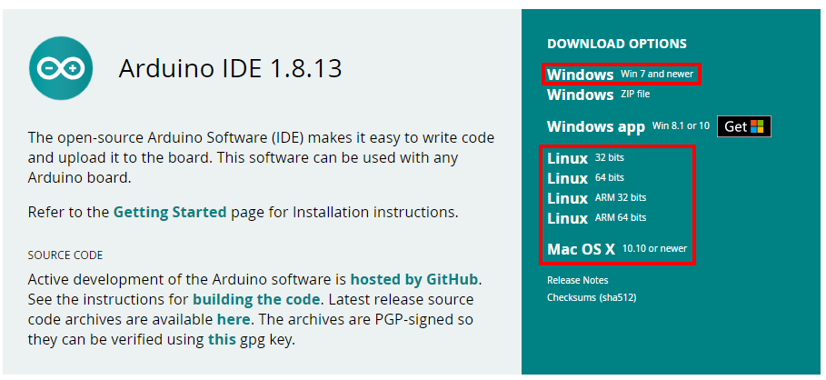
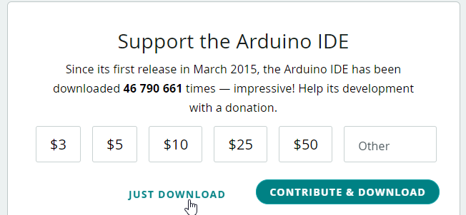
Для работы рекомендуется компьютер с Winodws 7 или выше, либо Linux/MacOS
Arduino Windows appНе рекомендуется устанавливать Arduino Windows app из магазина приложений Windows, так как с ней бывают проблемы×Закрыть это предупреждение.
Другие версииНе устанавливайте старые версии IDE, если нет на то весомых причин, а также beta и hourly-билды×Закрыть это предупреждение.
Java
Для старых версий Arduino IDE, а также для некоторых других программ, понадобится пакет Java JRE. Скачать можно с официального сайта для своей операционной системы.
Установка
Arduino IDE устанавливается как обычная программа, запускам и жмём далее далее далее…
Драйвер
Во время установки Arduino IDE программа попросит разрешения установить драйвера от неизвестного производителя, нужно согласиться на установку всего предложенного.
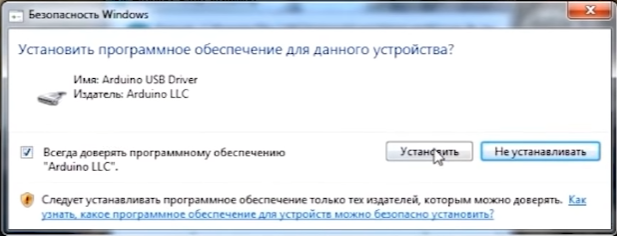
Обновление
Перед установкой новой версии нужно удалить старую. Ни в коем случае не удаляйте папку установленной IDE из Program Files, удалять нужно через “Установка и удаление программ“, либо запустив файл uninstall.exe из папки с установленной программой. Иначе установщик откажется устанавливать новую программу, так как в системе остались следы от старой. Решение этой проблемы описано в видео ниже. Вкратце о том, как удалить IDE вручную:
Удаление остатков IDE
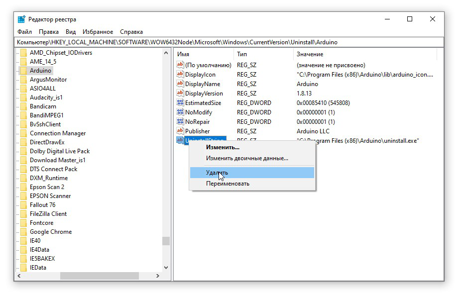
Другие проблемы
Портативная версия
Вместо полной установки программы можно скачать архив с уже “установленной”, на странице загрузки он называется Windows ZIP file. Вот прямая ссылка на 1.8.19. Распаковав архив, получим портативную версию Arduino IDE, которую можно скинуть на флешку и использовать на любом компьютере без установки программы. Но понадобится установить драйвер CH341 для китайских плат, а также драйверы из папки с программой Arduino IDE (подробнее в следующем уроке). Возможно понадобится установить Java.
Работа на смартфоне
Писать и загружать прошивку через смартфон тоже можно, понадобится смартфон на Android и приложение ArduinoDroid. Также для тренировки и удобного редактирования скетчей можно использовать CppDroid, но загружать в плату она не умеет.
Осмотр платы
Перед подключением к компьютеру рекомендуется провести визуальный осмотр платы на предмет дефектов пайки компонентов. Что можно встретить (в порядке фотографий):
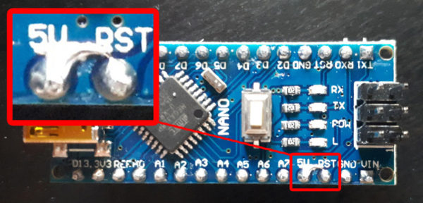
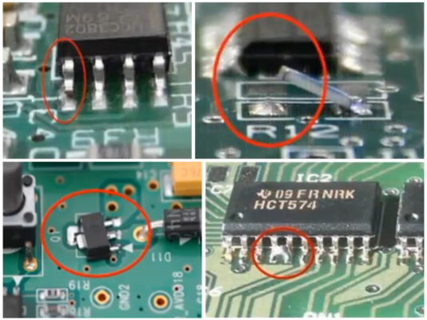
Плату с обнаруженным дефектом не рекомендуется подключать к компьютеру! Всё можно исправить паяльником, если не умеете сами – попросите того, кто умеет.
Реакция на подключение питания
Как понять, что плата работает корректно? На примере Nano/Uno:
Если ваша плата ведёт себя иначе – скорее всего это заводской брак, если плата новая, или кривые руки – если плата уже паялась и или куда то подключалась =)
CH341
В своих проектах я использую “Ардуино-совместимые” китайские платы, у которой для подключения по USB используется контроллер CH340/CH341. Чтобы он распознавался компьютером, нужно установить драйвер.
Windows
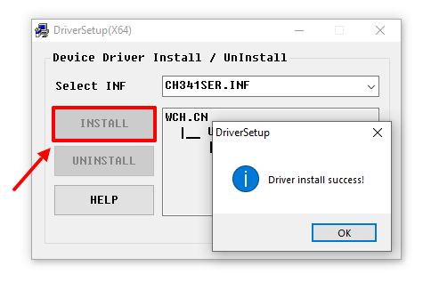
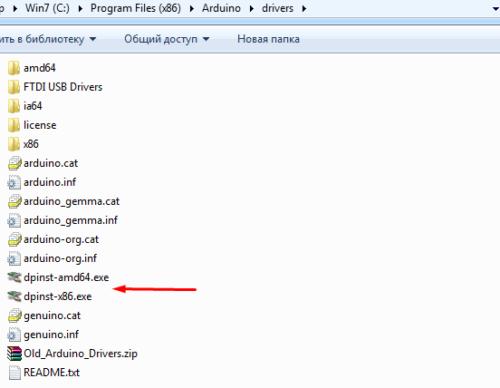
Mac OS
Linux Mint
Linux Arch
FT232
На оригинальных Arduino Nano стоит USB контроллер производства FTDI – FT232, драйвер для всех версий ОС можно скачать с официального сайта (прямая ссылка на инсталлятор для Windows). Некоторые очень редкие китайцы паяют на свои Наны поддельные FTDI контроллеры, которые буквально выходят из строя после некоторых обновлений Windows. Если вам достался такой экземпляр (я никогда не даю ссылки на такие поделки) – подробности по ситуации читайте здесь. Как восстановить контроллер и сделать рабочий драйвер – читайте здесь.
CP2102
На некоторые Arduino-совместимые платы китайцы ставят контроллер USB CP2102. Драйвер на него в большинстве случаев уже есть в системе (на Linux точно есть), если не работает – скачать можно с официального сайта.
На Windows установка производится следующим образом: достаём из архива и
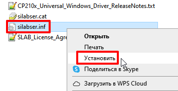
Подключение платы
Плата подключается к компьютеру по USB, на ней должны замигать светодиоды. Если этого не произошло:
Компьютер издаст характерный сигнал подключения нового оборудования, а при первом подключении появится окошко “Установка нового оборудования”. Если этого не произошло:
В списке портов (Arduino IDE/Инструменты/Порт) появится новый порт, обычно COM3. Если этого не произошло:
Выбор и настройка платы (Arduino NANO)
Загрузка прошивки
“Загрузка” прошивки происходит в два этапа – компиляция и непосредственно загрузка в микроконтроллер. Компиляция – проверка кода на наличие ошибок, её можно запустить, нажав кнопку с символом галочки в верхнем меню программы. Компилировать код можно даже не подключая плату к компьютеру! При нажатии на кнопку с символом стрелочки начнётся компиляция, а затем загрузка скомпилированного кода в плату.
Вставьте следующий код с полной заменой содержимого в IDE и загрузите его. Должен начать мигать светодиод на плате, это означает что все программы настроены верно и можно переходить к работе!
Примечание: данный код является универсальным для всех Arduino-совместимых плат
void setup() {
pinMode(LED_BUILTIN, OUTPUT);
}
void loop() {
digitalWrite(LED_BUILTIN, 0);
delay(300);
digitalWrite(LED_BUILTIN, 1);
delay(300);
}
ESP8266 – микроконтроллер с WiFi на борту, на его базе сделаны платы Wemos D1 mini, NodeMCU и другие.
Для работы с esp8266 нужно добавить поддержку плат в Arduino IDE:
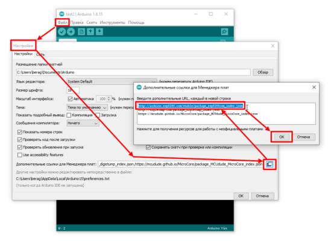
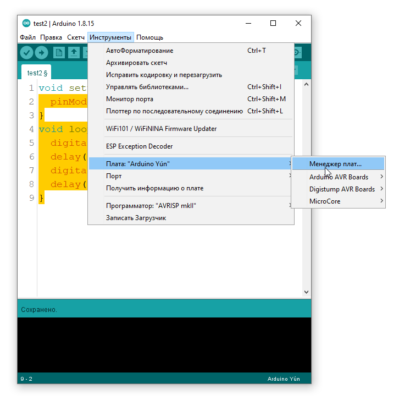
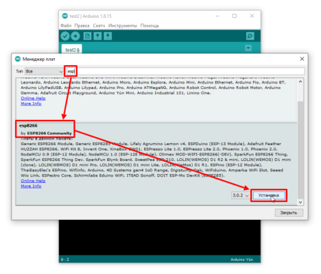
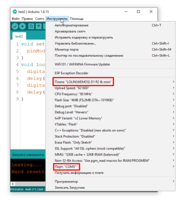
Заметка для NodeMCU. Перед началом загрузки нужно ввести плату в режим прошивки. Подключить к компьютеру, выбрать появившийся порт для загрузки. Зажать кнопку Flash. Кликнуть по кнопке Reset. Отпустить кнопку Flash. И только после этого нажать стрелочку в программе для загрузки прошивки.
ESP32 – мощный микроконтроллер с WiFi на борту
Для работы с ESP32 нужно добавить поддержку плат в Arduino IDE:
У некоторых плат не работает автоматический запуск в режиме прошивки, поэтому в самом начале процесса загрузки прошивки нужно зажать кнопку Flash (BOOT) на плате
Digispark – плата на базе ATtiny85.
Для работы с Digispark нужно добавить поддержку плат в Arduino IDE:
Прошивка загружается следующим образом: ПЛАТУ НЕ ПОДКЛЮЧАЕМ, ПОРТ НЕ ВЫБИРАЕМ, нажимаем загрузка, ждём компиляции. Появится надпись “подключите плату”. Втыкаем плату в USB и прошивка загружается.
LGT8F328 – китайский клон ATmega328
Для работы с LGT8F328 нужно добавить поддержку плат в Arduino IDE:
Для начала рекомендуется изучить вот эти два урока: первый и второй. У проектов на базе голого микроконтроллера есть два варианта:
Библиотека – несколько файлов с кодом, облегчающим работу с датчиками и другими модулями. К моим проектам библиотеки идут в архиве (об этом ниже). Рассмотрим все способы загрузки и установки библиотек.
Менеджер библиотек
Большинство Ардуино-библиотек можно установить автоматически из встроенного в программу менеджера библиотек:
Нужную библиотеку можно найти в поиске по названию и нажать Установка, библиотека будет автоматически установлена в папку с библиотеками. Arduino IDE проверяет обновления библиотек при запуске и предложит обновиться, если найдёт обновления.
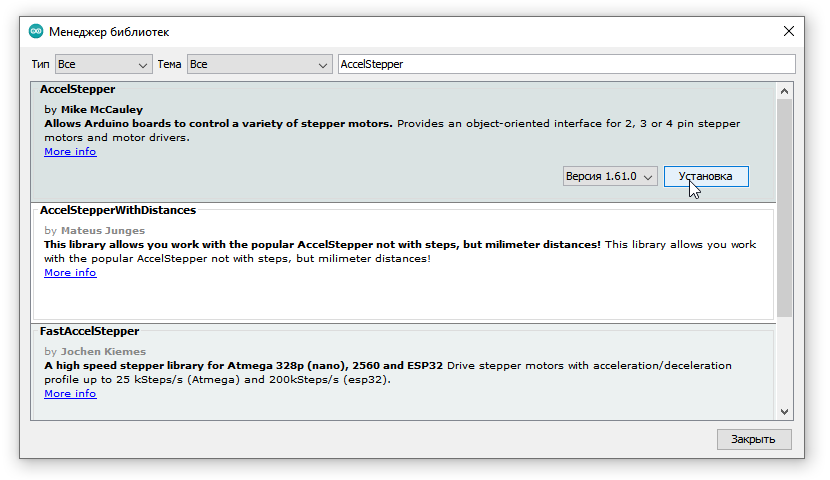
Скачивание с GitHub
Не все существующие библиотеки есть в менеджере библиотек и скачать их можно только с GitHub. Есть два способа: скачать весь репозиторий и скачать релиз. Весь репозиторий со всеми “лишними” служебными файлами можно скачать одним архивом вот так, нажав Code/Download ZIP
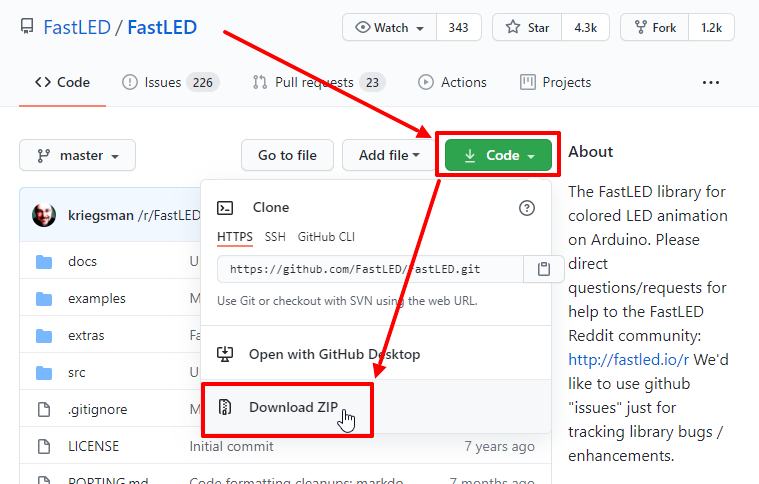
Если у библиотеки есть релизы – справа будет отмечен последний (свежий) релиз. Нажимаем на него:
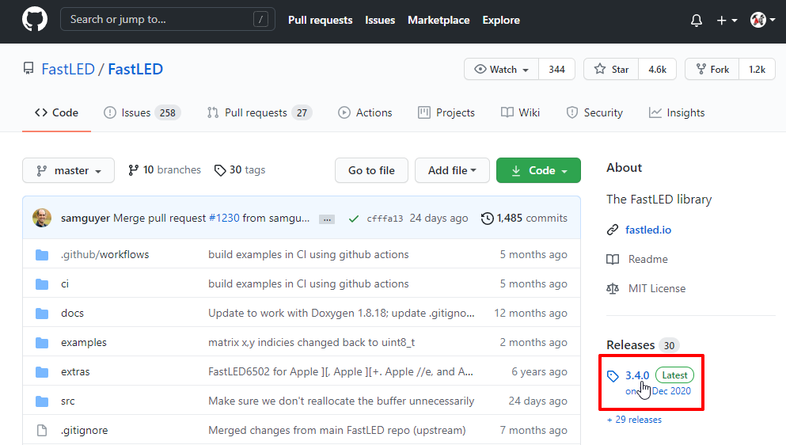
И в новом окне нажимаем Source code (zip) – начнётся загрузка архива. Скачивание релиза более предпочтительно, так как содержит только файлы библиотеки.
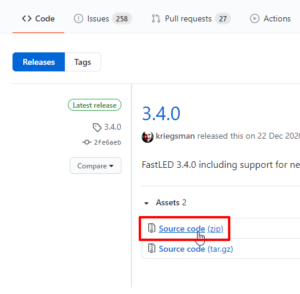
В обоих случаях библиотека скачается как .zip архив.
Автоматическая установка
Скачанный .zip архив можно установить в автоматическом режиме через Скетч/Подключить библиотеку/Добавить .ZIP библиотеку… В открывшемся окне выбрать скачанный архив, библиотека будет установлена по указанному в настройках пути.
Ручная установка
Для начала нужно распаковать архив (стандартный архиватор Windows или WinRAR). Чтобы Arduino IDE смогла использовать библиотеку, нам нужно положить её туда, где программа будет её искать. Таких мест три (на примере Windows):
Рекомендуется держать все библиотеки в одном месте, чтобы не было путаницы. Лично я устанавливаю все библиотеки в папку с программой (в Program Files), но для этого могут потребоваться права администратора (зависит от версии и настроек Windows). Если у вас возникли с этим проблемы – устанавливайте в Документы/Arduino/libraries/. На скриншотах показана установка скачанной с GitHub библиотеки в папку с программой и в документы. Ставить нужно в одно место, я просто показываю оба варианта.
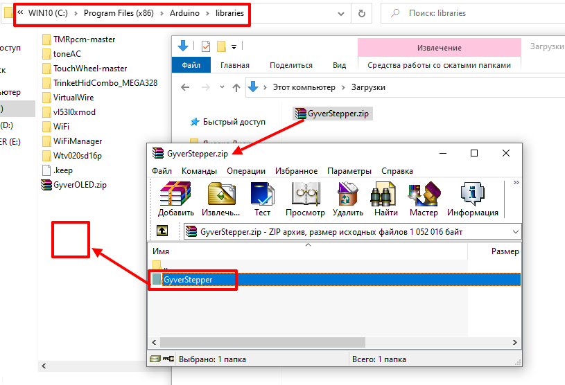
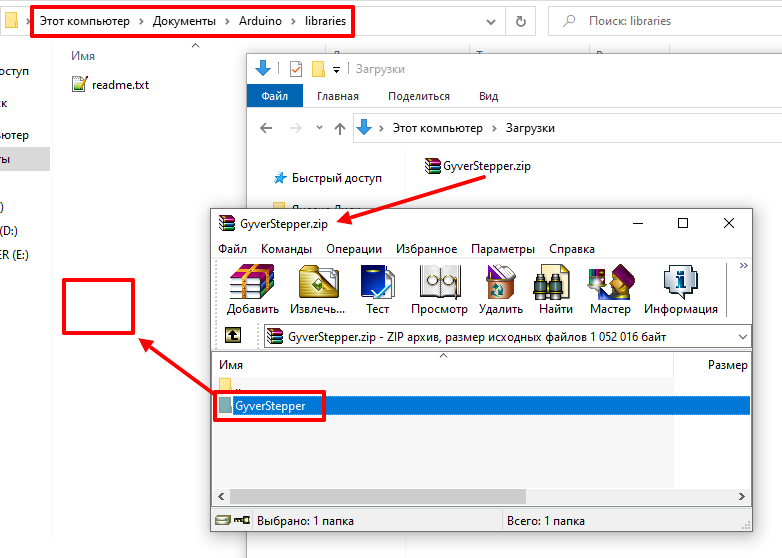
Возникает на этапе сборки и компиляции прошивки. Ошибки компиляции вызваны проблемами в коде прошивки, то есть проблема сугубо программная. Слева от кнопки “загрузить” есть кнопка с галочкой – проверка. Во время проверки производится компиляция прошивки и выявляются ошибки, если таковые имеются. Ардуино в этом случае может быть вообще не подключена к компьютеру.
Частые ошибки в коде, приводящие к ошибке компиляции
Возникает на этапе, когда прошивка собрана, скомпилирована, в ней нет критических ошибок, и производится загрузка в плату по кабелю. Ошибка может возникать как по причине неисправностей железа, так и из-за настроек программы и драйверов.
Помимо ошибок, по причине которых проект вообще не загрузится в плату и не будет работать, есть ещё предупреждения, которые выводятся оранжевым текстом в чёрной области лога ошибок. Предупреждения могут появиться даже тогда, когда выше лога ошибок появилась надпись “Загрузка завершена“. Это означает, что в прошивке нет несовместимых с жизнью ошибок, она скомпилировалась и загрузилась в плату. Что же тогда означают предупреждения? Чаще всего можно увидеть такие:
ВНИМАТЕЛЬНО ЧИТАЙ ИНСТРУКЦИЮЕсли это твой первый опыт работы с Arduino - внимательно изучи каждый пункт инструкции выше, здесь всё написано!!!×Закрыть это предупреждение.
Все мои проекты имеют одинаковую структуру и устанавливаются/прошиваются одинаково, поэтому вот финальная общая инструкция:
1. Установить Arduino IDE и драйверы, как написано в гайде выше. Если это ваш первый раз – желательно не подключать ничего к новой плате, а загрузить пробную прошивку из гайда и убедиться, что всё загружается и работает. Если после сборки схемы прошивка перестанет загружаться – увы, схема собрана с ошибками и плата уже могла сгореть. Но она работала, мы это проверили =)
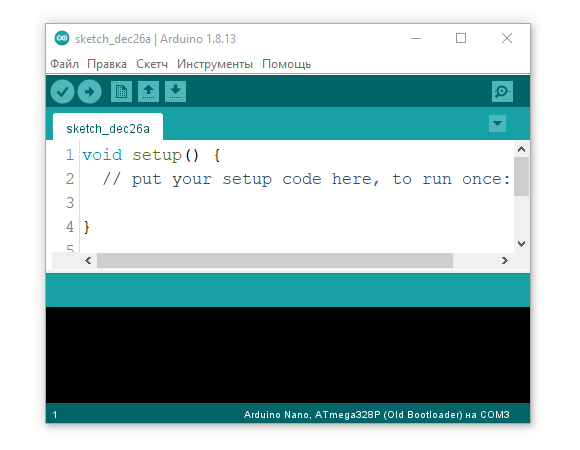
2. Скачать архив со страницы проекта. Ссылка всегда одна, она ведёт на прямую загрузку архива с хранилища GitHub. Когда проект обновляется (об этом может быть написано на странице проекта), ссылка на архив остаётся той же, но в нём будут уже какие-то изменённые файлы, добавлены новые версии прошивки и т.д. Все обновления указаны на странице проекта.
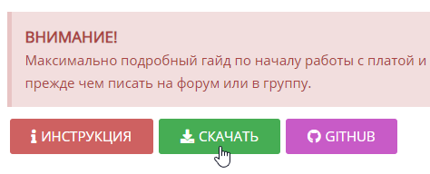
3. Распаковать архив. Архив имеет формат .zip, для его распаковки можно использовать встроенные инструменты операционной системы, либо популярный WinRAR. Если не распаковать архив – прошивка откроется неправильно. Я не отличаюсь буйной фантазией и всегда называю папки одинаково, вот что может быть в архиве проекта:
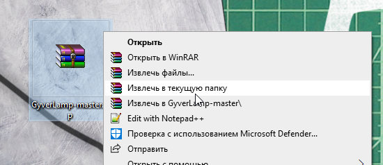
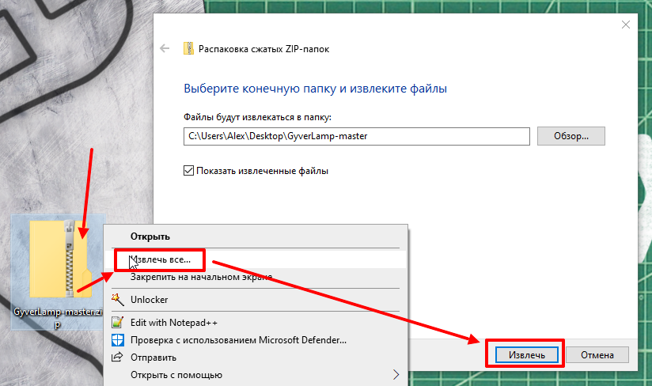
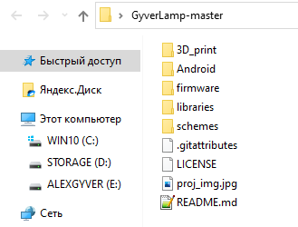
4. Установить библиотеки. К прошивкам моих проектов почти всегда идут библиотеки, необходимые для работы. Библиотеки в проектах часто пересекаются, но рекомендуется ставить именно версию, идущую в архиве с проектом, так как библиотеки обновляются и могут быть несовместимы со старыми проектами.
Примечание: если в папке с библиотеками уже есть библиотека как в архиве проекта – удалите её перед копированием. Нужная библиотека из архива может содержать другой набор папок и файлов, что приведёт к конфликту при “замене” папки!
Примечание: не у всех проектов в архиве есть папка с библиотеками. Если её нет – дополнительно устанавливать ничего не нужно.
Примечание: если на странице проекта сказано установить конкретные библиотеки с перечислением названий – их нужно установить через менеджер библиотек по названиям, как описано выше в гайде.
Содержимое папки libraries из архива помещаем в:
Примечание: в видео инструкции выше сказано устанавливать библиотеки в папку с программой. На Windows 10 и выше это требует прав администратора, так что лучше устанавливать библиотеки в Документы.
К разным проектам идут разные версии одних и тех же библиотек, они не всегда совместимы. При возникновении ошибок рекомендуется удалить текущие версии и заменить их теми, которые идут в архиве.
5. Открыть скетч (так называется файл с программой). При запуске файла скетча автоматически откроется Arduino IDE. Важно: если в папке со скетчем есть несколько файлов – запускаем любой с логотипом Arduino. Остальные файлы должны подтянуться автоматически и образовать вкладки в окне программы. Если запускать скетч прямо из архива – вкладки не откроются и скомпилировать/загрузить программу будет невозможно.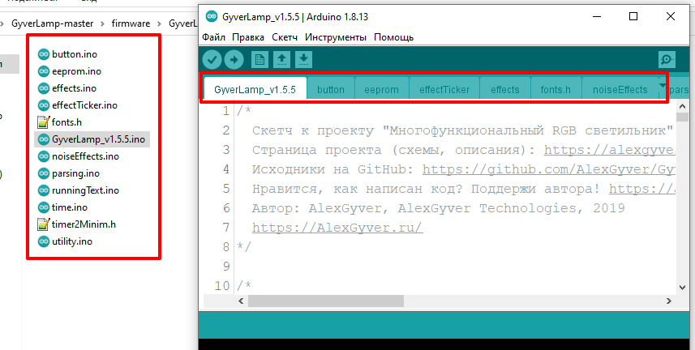Вкладки в Arduino IDE
6. Выбрать плату и порт. Выбираем в настройках программы соответствующую плату и порт куда она подключена, как в гайде выше. Важные моменты по настройкам самой платы обычно указано в описании конкретного проекта.
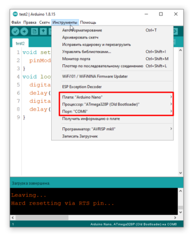
7. Настроить программу. Очень часто в начале кода моих программ можно встретить блок настроек. Настройки обычно имеют вид
#define SOME_SETTING 1 // 1 включено, 0 выключено
где цифра отвечает за значение настройки, менять нужно только цифру согласно комментарию.
8. Загрузить прошивку. Нажимаем стрелочку в левом верхнем углу окна программы и прошивка загружается. Не загружается? Читаем гайд выше, там описаны все возможные причины.
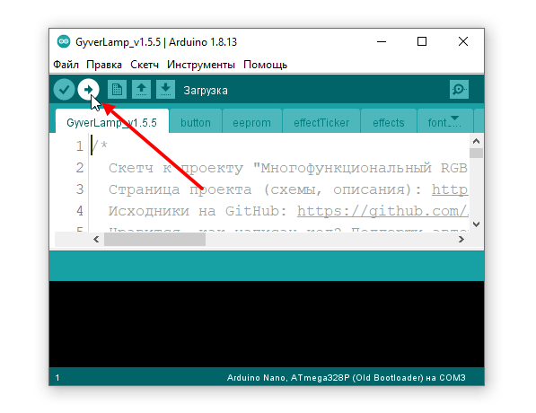
Загружать прошивку желательно до подключения компонентов, чтобы убедиться в том, что плата рабочая. После сборки можно прошить ещё раз, плата должна спокойно прошиться. В проектах с мощными потребителями в цепи питания платы 5V (адресная светодиодная лента, сервоприводы, моторы и проч.) необходимо подать на схему внешнее питание 5V перед подключением Arduino к компьютеру, потому что USB не обеспечит нужный ток, если потребитель его потребует – это может привести к выгоранию защитного диода на плате Arduino.
9. Если что-то не работает – читай инструкцию, в ней описан каждый шаг и решение всех проблем. Также в самом начале есть видео, где всё показано ещё более подробно.
Заметка для тех, кто не читал инструкцию и получил какую-то ошибку. Вот список самых частых причин:
4.8/5 - (146 голосов)
ПОХОЖИЕ ЗАПИСИ